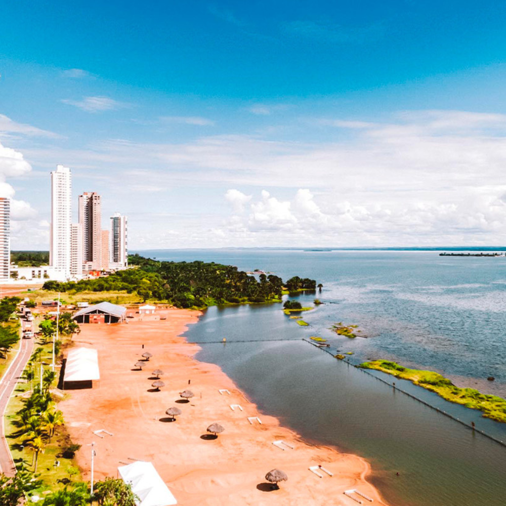

O estado do Tocantins pertence à Região Norte do Brasil e sua capital é Palmas.Ele destaca-se por ser o estado mais jovem do país, criado pela Constituição de 1988 a partir da divisão do norte de Goiás. Geograficamente, funciona como uma área de transição entre a Floresta Amazônica e o Cerrado, abrigando o famoso Parque Estadual do Jalapão, conhecido por suas dunas de areia dourada, cachoeiras e fervedouros de águas cristalinas. Sua capital, Palmas, é uma cidade totalmente planejada e a última construída no Brasil no século XX.

Voltar